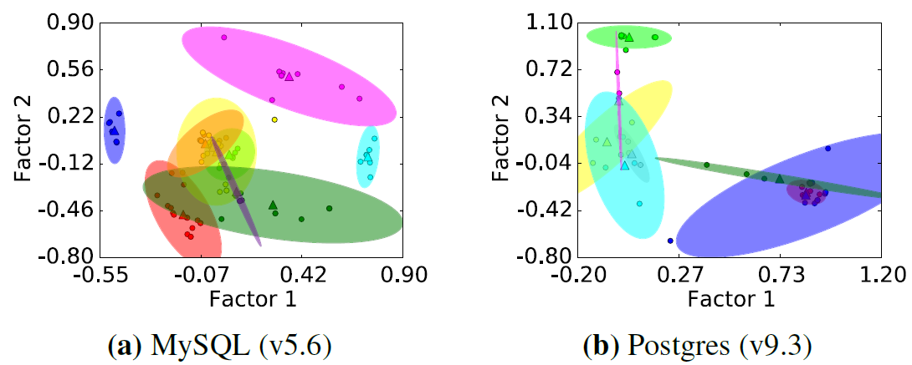
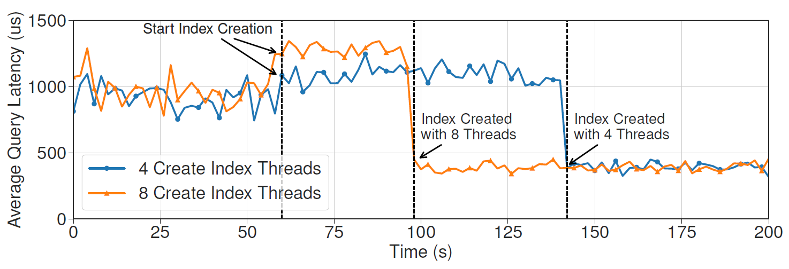
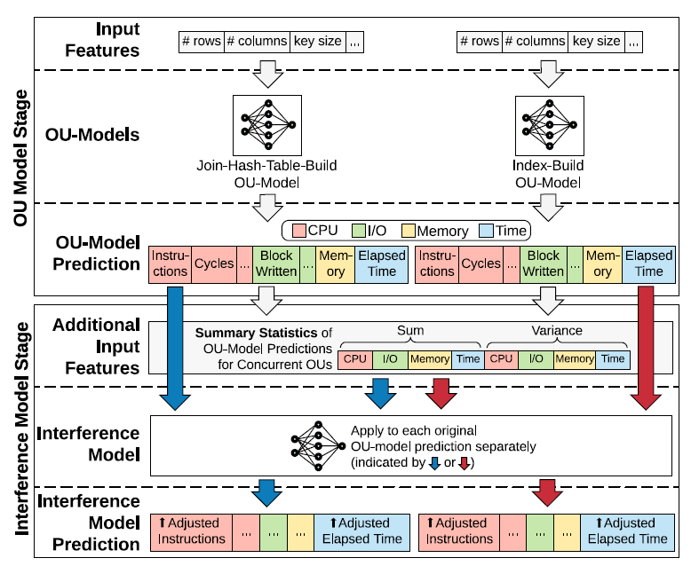
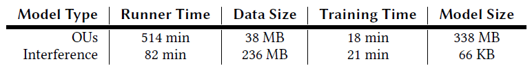
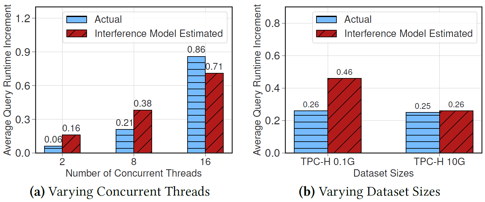
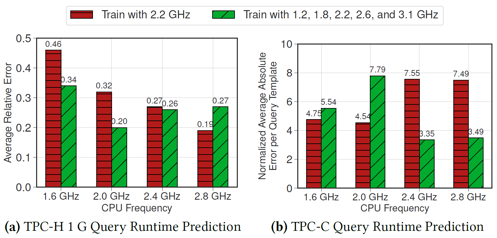

Paper Notes
This is a collection of paper notes written by Yu-Shan Lin.
Template
- Authors:
- Institute:
- Published at
- Paper Link:
Background
Motivation
Problem
Method
Experiments
Conclusion
Questions
DBMS Machine Provisioning
- ICAC'11 - A Bayesian Approach to Online Performance Modeling for Database Appliances using Gaussian Models
- Problem: modeling DBMS workloads using Gaussian Process
- Keys:
- It only focuses on modeling workloads and does not propose any application.
- It demonstrate GP can predict quite accurate with small data set.
- SIGMOD'18 - P-Store: An Elastic Database System with Predictive Provisioning
- Motivation: previous work always react after an overloaded event happens.
- Problem: they propose to make machine provisioning decision by predicting the following workloads.
- Keys:
- The target workload must be easy to predict.
- There can be a few distributed transactions.
- IEEE CloudCom'18 - DERP: A Deep Reinforcement Learning Cloud System for Elastic Resource Provisioning
- https://ieeexplore.ieee.org/abstract/document/8590989
- Motivation: previous work can not deal with large input space so we need a learning based method.
- Method: Uses a DQN RL agent to decide when to add/remove machines and how many machines are added/removed to a DBMS cluster.
- Key Points:
- Targeting on NoSQL systems.
- VLDB'19 - iBTune: individualized buffer tuning for large-scale cloud databases
- https://dl.acm.org/doi/abs/10.14778/3339490.3339503
- Focus on tuning buffer size
- VLDB'21 - Seagull: An Infrastructure for Load Prediction andOptimized Resource Allocation
- http://www.vldb.org/pvldb/vol14/p154-poppe.pdf
- Problem: to predict the load of a DBMS server and use the predicted info to decide when to backup the DB.
- Keys:
- Focuses on system design
- Assumes the target workload have periodical patterns
- Tried methods to predict workloads
- Singular Spectrum Analysis
- Feed-forward Networks
- Prophet: a software with a model proposed by Facebook to predict time series data with yearly, weekly, and daily patterns.
A Bayesian Approach to Online Performance Modeling for Database Appliances using Gaussian Models
- Authors: Muhammad Bilal Sheikh, Umar Farooq Minhas, Omar Zia Khan, Ashraf Aboulnaga, Pascal Poupart, David J Taylor
- Institute: University of Waterloo
- Published at ICAC'11
- Paper Link: https://dl.acm.org/doi/10.1145/1998582.1998603
Background
- Database Appliance
- A VM with a pre-installed copy of a OS and a DBMS
- Easy to deploy
Motivation
- DBA may need to predict workloads to decide how to allocate resources
- Previous work on this
- Analytical models
- Need a domain expert
- Specific to a particular DBMS
- Experiment-driven
- Method
- Modeling workloads by sampling from query executions
- Use statistical models to fit the workloads
- Problems
- Any new change to the workloads make these previous methods need to collect new data and retrain their models.
- Hard to introduce prior knowledge to the models.
- Method
- Analytical models
Problem
To model workloads with Gaussian Process and make it adapt to changing workloads fast.
Formal Definition
Assumptions:
- Each query belongs to a particular query type \(Q_i\), where \(1 \le i \le T\).
- There are \(T\) types of queries.
- A mix of queries \(m_j\) is represented as a vector \(<N_{1j},...,N_{Tj}>\), where \(N_{ij}\) represents # of queries in type \(Q_i\).
- The total number of queries in a mix is less than \(M\), where \(M\) is defined by the DBA.
- The samples for the mix \(m_j\) is represented as \(S_j = <m_j,r_{ij}>\) where \(r_{ij}\) is the real response time for a query in type \(Q_i\) in mix \(m_j\).
Goal:
To find a function \(f(.)\) such that \( \hat{r}_{ij} = f(m_j, Q_i) \) where \( \hat{r}_{ij} \) is the estimated response time for a query in type \(Q_i\).
Method
Main Idea
It maintains two models:
- Response Time Model
- Given the current workload mix \(m_i\) and the target query type \(Q_i\), predict the response time.
- Configuration Model
- Given the current system configuration, predict the parameters of the response time model.
With these models, the system will not need to retrain for new system configs because it can predict the parameters from the configuration model.
System Overview

Each Components
Generating Training Data
Two ways:
- Uniformly sampling # of queries for each query type
- This will generating a data set with a small variance and its total load would concentrate on \(\frac{M}{2}\). Not good for learning.
- Uniformly sampling (the total number of queries, the number of different types of queries)
Modeling Response Time
Proposed Two Types of Models
- Linear Gaussian Models
- Input: could be
- the current total load (# of queries) \(l\)
=> Linear Load Model - the # of queries for each query type \(m = <N_{1},...,N_{T}>\)
=> Linear Query Mix Model
- the current total load (# of queries) \(l\)
- Output: the response time \(r\)
- Model: \(P(r|l;\theta) = \mathcal{N}(\beta_0 + \beta_1 l, \sigma^2)\)
- How to learn? Maximum Likelihood Estimation (MLE)
- Input: could be
- Gaussian Process Models
- Input: could be
- the current total load (# of queries) \(l\)
=> Gaussain Process Load Model (GPLM) - the # of queries for each query type \(m = <N_{1},...,N_{T}>\)
=> Gaussian Process Mix Model (GPMM) - Combination of total load \(l\) and mix \(m\)
=> Gaussian Process Mix + Load Model (GPMLM)
- the current total load (# of queries) \(l\)
- Output: a gaussian distribution of the response time \(r\)
- Model: Gaussain Process
- Mean Functions:
- 0 mean
- linear mean function: \(mean(x) = \beta_0 + \beta_1 x_1 + ... + \beta_T x_T\)
- Kernel Functions:
- Squared Exponential Function (SE, i.e. RBF Kernel)
$$ k(x, x') = \sigma^2 exp(\frac{-||x - x'||^2}{2 \eta ^ 2 I}) $$ - Rational Quadratic Function (RQ) $$ k(x, x') = \sigma^2 [1 + \frac{||x - x'||^2}{2 \alpha \eta ^ 2 I}] ^ {-\alpha} $$
- Squared Exponential Function (SE, i.e. RBF Kernel)
- Mean Functions:
- How to find the hyper-parameters? Same as linear models, Maximum Likelihood Estimation (MLE).
- Input: could be
Modeling Hyper-parameters of a Response Time Model
They found that
- A different configuration of the system needs a different set of hyper-parameters (i.e. a different model)
- If a configuration do not appear in the training data set, the model may not learn well.
So, we need a model to predict hyper-parameters for GP models.
- Input:
- Mean of recent response time: \(R_{MEAN}\)
- STD of recent response time: \(R_{SD}\)
- Buffer Pool Size: \(BP\)
- CPU Count: \(CPU_{NUM}\)
- CPU Frequency (in MHz): \(CPU\)
- Memory Size: \(MEM\)
- Output: each hyper-parameter used by GP models (one model per hyper-parameter)
- Model: should be Gaussain Process, but the paper does not say explictly
- Mean and kernel functions are unknown.
Experiments
Model Accuracy
Effect of Buffer Pool Size (Figure 3)
- It shows the linear models work poorer than GP models in all conditions, especially when the database fit partially in the buffer pool.
Effectiveness under overload (Figure 4)
- It shows the GP models able to capture the variance of response time even if the system is overloaded and the variance is large.
Overall Accuracy (Figure 5)
- It shows GPMLM (0, RQ) works well in all tests.
Online Adaptability
Online Costs
- Linear models work poorly so it does not adapt it to the online setting.
- GP models with linear mean have very high cost since the mean function has \(T + 1\) hyper-parameters to learn.
- Takes 1 hour to learn for 22 query types with 500 samples/type.
- GP models with 0 mean and RQ kernel works best.
- Takes 4~7 minutes to learn for 22 query types with 500 samples/type.
Adapting to Dynamic Configurations (Figure 6)
- This experiment evaluates how the model performs when the configuration changes.
- If each time the configuration changes and the model simply throw all samples, the results show it suffer from high error rate in the beginning.
- If the model does not throw the samples but keeps them, the results show the error rate would be much lower at the same time.
- The results also show that the online models work similar to the models pre-trained using the same workload.
Adapting to Dynamic Workloads (Figure 7)
- This experiment evaluates how the model performs when new query types appear in the workload.
- The model that keeps the old data while collecting new data works best.
Model Robustness
Impact of New Queries (Figure 8)
- GPMLM(0, RQ) works best with 4% increase in precentage error when there are 5 new query types.
- This is because GPMLM also models the total number of queries which is a useful info for predicting response time.
Online Model Convergence (Figure 9)
- This experiment tests how well GPCM works when a new query type appear
- Setting the hyper-parameters to 0 works worst.
- Setting the hyper-parameters by averaging over existing parameters work quite well.
- This shows that there are correlation between these parameters
- Setting the hyper-parameters using GPCM works best.
- It also shows that 100 samples are enoguh for a good GP model.
Configuration Model Accuarcy (Figure 10)
- I don't understand this...
Notable References
- Use Gaussian Process to model workloads
- EDBT'11 - Predicting completion times of batch query workloads using interaction-aware models and simulation.
- SIGMOD'10 - iTuned: a tool for configuring and visualizing database parameters.
Conclusion
- Pros
- GP's advantages
- Can introduce prior knowledge (distributions)
- Can provide confidence intervals for each prediction
- GP's advantages
- Cons
- It does not propose any application on DBMSs.
Questions
- Why not just use online-learning methods to overcome dynamic workloads?
- It seems like it assumes that every query in the same type has the same response time or at least similiar time. Is this a reasonable assumption?
- How does the second way of sampling decides the ratio of number of queries between each type when generating training data?
- What is the difference between the kernel functions that this paper uses?
- Why is training the configuration model more reasonable than training a single response time model?
- because the response time model can only work for one type of system configuration.
- the space of system configurations is much smaller than the space of possible workloads.
P-Store: An Elastic Database System with Predictive Provisioning
- Authors: Rebecca Taft, Nosayba El-Sayed, Marco Serafini, Yu Lu, Ashraf Aboulnaga, Michael Stonebraker, Ricardo Mayerhofer, Francisco Andrade
- Institute: MIT, Qatar Computing Research Institute - HBKU, Urbana-Champaign, B2W Digital
- Published at SIGMOD'18
- Paper Link: https://dl.acm.org/doi/abs/10.1145/3183713.3190650
Motivation
DBMS machine provisioning is an important topic that controls the elasiticity and resource utilization of a distributed DBMS.
However, existing approaches always react slower than the actual demand.
Problem
To design a system online reconfiguration strategy that reacts before the system overloaded such that:
- the resource used by the system is minimized
- the reconfiguration does not violate SLA.
Input:
- A prediction to the future workload
- The capacity of a machine
Output:
- When to add/remove machines
- How many machines to be added or removed
Assumptions:
- The target workload has periodic patterns that are easy to be predicted.
- There is no spike in the workload.
- Only a few distributed transactions.
This goal can be visualized as follows:

Method
Two Parts:
- Workload Prediction
- Allocation Decision
Workload Prediction
Models the workload as a time series data and uses Sparse Periodic Auto Regression to predict [USENIX'08].
Models the future workload at a time as a sum of a long-term pattern (past n days) and a short-term pattern (past m minutes).
Allocation Decision
Use DP.
Comments
- Pros
- Works well on predictable workloads
- Cons
- The workload must be easy to predict
- The database must be easy to partition so that P-Store won't need to consider the impact of distributed transactions.
DBMS Data Partitioning
- PEN'19 - Using machine learning for intelligent shard sizing on the cloud
- http://pen.ius.edu.ba/index.php/pen/article/view/332
- Problem: decides data partitioning by predicting the latency of a DBMS application with a given data partitioning strategy.
DBMS Query Processing
- SIGMOD'20 - Thrifty Query Execution via Incrementability
- https://dl.acm.org/doi/abs/10.1145/3318464.3389756
- Problem: to study how to efficiently evaluate a query even before all the data are ready.
- Then, the query can be executed faster when all data are set.
- Motivation: previous work only focus on select-project-join-aggregate queries, but not more complex queries such as nested queries and outer/anti-joins.
- Assumption: data arrival rate can be predicted from historical statistics
DBMS Scalability
- VLDB'19 - STAR: Scaling Transactions through Asymmetric Replication
- TKDE'20 - Hihooi: A Database Replication Middleware forScaling Transactional Databases Consistently
STAR: Scaling Transactions through Asymmetric Replication
- Authors: Yi Lu, Xiangyao Yu, Samuel Madden
- Institute: MIT CSAIL
- Published at VLDB'19
- Paper Link: http://www.vldb.org/pvldb/vol12/p1316-lu.pdf
Motivation
Cross-partitions transactions hurt scalability of distributed database systems due to two-phase commit.
Problem
To design a better execution scheme to avoid executing cross-partition transactions in a distributed way.
Assumptions
- A partitioned distributed DBMS
- One of the nodes has enough memory capacity for a complete replica.
Method
- Separate the transactions into two categories:
- Single-partition transactions
- Cross-partitions transactions
- Separate machines in the cluster into two categories:
- Partial-replica machines
- Full-replica machines
- Then, divide the execution into two phases:
- Partitioned Phase
- Executes only single-partition transactions.
- Each partition has a partial-replica machine as its primary machine.
- A thread takes the responsibility to execute single-partition transactions on a partition.
- Single-master Phase
- Executes only cross-partition transactions.
- A full-replica machine will be the master node for all the transactions.
- Partitioned Phase
Conclusion
- Pros
- Eliminates distributed transactions
- Cons
- This method assumes that there is a machine which has high computing power to execute transactions and high memory capacity to store all the data in memory.
- During phase transition, it requests all participants to synchronize with each others. This may be unrealistic for cross-WAN settings.
- On the other hand, Calvin only needs a part of machines to reach a consensus and replicates inputs.
Questions
- Q: How about deterministic DBMSs?
- The paper argues that the total ordering for deterministic DBMSs is costly.
- But, is the replication fence of STAR not costly?
Hihooi: A Database Replication Middleware for Scaling Transactional Databases Consistently
- Authors: Michael A. Georgiou, Aristodemos Paphitis, Michael Sirivianos, Herodotos Herodotou
- Institute: Cyprus University of Technology, Limassol, Cyprus
- Published at TKDE'20
- Paper Link: https://ieeexplore.ieee.org/abstract/document/9068420
Motivation
Previous appraoches focus on scaling-out by data partitioning, but most of applications do not have large amount of data. It is not necssary to store data in multiple machines.
They propose to scale-out by replication in a master-slave and asychronous fasion.
Problem
To maintain a master-slave architecture on a DBMS system with high read scalability.
Main challenge: How to replicate data efficiently and ensure strong consistency?
Method
(Quick read through)
Statement replication:
- Exceutes the SQL in the primary DB
- Record the execution order of each statement
- Replay the statements in the same ordre in backup DBs.
Experiments
(Not check)
Conclusion
Pro
- Middleware approaches
- Scales well for read-heavy workloads
Con
- Not scale for write-heavy workloads since every write transactions must be executed in the primary DB once.
- Only suitable for the cast that data can be stored in a single machine
Compared to deterministic DBMSs
- No need to avoid ad-hoc queries.
- No need to know read/write-set in advance.
- However, deterministic DBMSs can deal with more general OLTP workloads.
Questions
- How to ensure low latency?
- By using asychronous architecture to avoid 2PC.
- The master is still a bottleneck when using a master-slave architecture.
- They assume most of transactions are read transactions, which can be routed to slave nodes.
- Why do the experiments show that Hihooi can still scale on write-heavy workloads?
Deterministic DBMS
VLDB'14 - An evaluation of the advantages and disadvantages of deterministic database systems
- Authors: Kun Ren, Alexander Thomson, Daniel J. Abadi
- Institute: Northestern Polytechnical University, Yale University
- Published at VLDB'14
- Paper Link: https://dl.acm.org/doi/10.14778/2732951.2732955
Goal
To evaluate and compare deterministic DBMSs and non-deterministic DBMSs in different settings and workloads, in order to find out where to use deterministic DBMSs is the best.
Implementation Details
Deterministic DBMSs
- Use VLL protocol by default
- 1 thread for acquiring locks and 4 threads for processing transactions
Non-deterministic DBMSs
- 5 threads are used for processing transactions
- A thread can process multiple transactions at once, if most of transactions are waiting for network messages
- Lock-based protocol
- Use wait-for graph to detect distributed deadlocks
- Uses two phase commit to ensure strong consistency
Key Observations
- Lock acquisition time for each transaction in deterministic DBMSs
- 30% for short transactions (1 read/write action for an item)
- 16% for long transactions
- VLL protocol is useful only when lock acquisition is a bottleneck.
- Two phase commit makes a non-deterministic DBMS perform poorly when there are many distributed transactions.
- About 30% in an extreme case.
- Distributed deadlocks makes a non-deterministic DBMS perform poorly when both the number of distributed transactions and the contention are high. (Figure 1, Figure 2)
- How many nodes involve in a distributed transaction does not affect the performance difference between determinisitic and non-deterministic DBMSs. (Figure 3)
- A non-deterministic DBMS can utilize CPU resource more when there is no distributed transaction with TPC-C because the overhead of handling distributed locking and deadlocks is eliminiated. (Figure 4)
- It is often impossible for machines to get very far ahead of the slowest machine, since new transactions may have data dependencies on previous ones that access data on slow machines. (Figure 5 (a))
- A non-deterministic DBMS can reorder transactions on demend to avoid this problem.
- The flexibility of non-deterministic DBMSs does not yield much benefit in a cluster with slow machines as we expected. (Figure 5 (a))
- We can optimize non-determinitic DBMSs by aborting transactions (70% of local transactions).
- The performance cost of OLLP are independent of the performance cost of processing distributed transactions. (Figure 6)
- For most real-world scenario, OLLP yields very few transaction restarts. (Figure 6)
- A deterministic DBMS still scales better than a non-deterministic DBMS even on a high contention scenario because the non-deterministic DBMS needs to handle distributed deadlocks. (Figure 8)
Aria: A Fast and Practical Deterministic OLTP Database
- Authors: Yi Lu, Xiangyao Yu, Lei Cao, Samuel Madden
- Institute: MIT
- Published at VLDB'20
- Paper Link: http://vldb.org/pvldb/vol13/p2047-lu.pdf
Background
Deterministic DBMS show great potential for optimizations in transaction processing.
Motivation
Currently, deterministic DBMSs all request the input transaction requests to provide their read-sets and write-sets. If not, they will need to execute the transactions once to determine their read-/write-sets.
Problem
To design a concurrency control mechanism without knowing read-sets and write-sets while ensuring deterministic execution.
Method
- Main Idea: Batch execution with barriers
- Execution phase:
- Executes one batch of transactions at a time.
- Every transaction runs in parallel, reads from the same snapshot, and writes to its local buffer.
- Updates to indices are also buffered, so there is no phantom due to index updates.
- Commit phase:
- To commit a transaction, it must wait until all other transactions finish execution as well. (barrier)
- If there is a WW, RW, or WR conflict with earlier transaction, aborts and reschedules the later transaction.
- Execution phase:
- Optimization: Deterministic Reordering
- Uses a relaxed check while deciding aborts:
- Aborts a transaction only if:
- It has WW conflict with an earlier transaction.
- Or, it has at least one RW conflict and also at least one WR conflict with earlier transactions at the same time.
- This rule prevents cycles in the dependency graph. (proved in Section 5.3)
- Aborts a transaction only if:
- Uses a relaxed check while deciding aborts:
- Optimization: Fallback Phase
- If too many transactions are aborted, add a fallback phase after the commit phase.
- The fallback phase will execute the aborted transactions in the Calvin fashion.
- The key is that we have known the read-sets and write-sets of the aborted transactions because the system has executed them once.
Experiments
My Expectation
- Aira works well in low contention workloads but poorly in high contention workloads.
- It works actually ok in high contention workloads since it has fallback strategies.
Experiment Summary
- 8.2 YCSB
- Aira works great since the keys of YCSB transactions are drawn from a uniform distribution.
- 8.3 Scheduling Overhead
- Aira has almost no scheduling overhead since the only overhead is to book-keeping writes in a reservation table.
- 8.4 Effectiveness of Deterministic Reordering
- The performance of Aira goes down as the workload becomes more skew, however, Aira still performs better than Calvin thanks to fallback phases.
- Aira with deterministic reordering also shows its effectiveness compared to Aira without DR.
- 8.5 TPC-C
- Interestingly, this experiment shows how contention affects Aira significantly in a standard OLTP benchmarks.
- 8.6 Distributed Transactions
- Aira basically outperforms all baselines no matter how many distributed transactions are there.
- However, note that the contention in the TPC-C setting is extremely low, which gives Aira a big advantage.
- 8.7 Scalability
- Aira scales well.
Conclusion
Pros
- It won't need read-sets and write-sets for deterministic execution.
- It performs much better than Calvin in low contention workloads.
Cons
- Aborts many transactions in high contention workloads.
- Barriers between batches leads to slow down the entire transaction execution when transaction lengths are imbalanced.
Questions
- Is that possible to use wound-wait or wait-die 2PL to achieve the same effect?
- No, this may lead to nondeterministic execution since there is no barrier.
- The system aborts all the transactions that conflict with the earlier transactions in the same batch. So, does this mean that we better run this system in a low contention workloads?
- Yes. See experiments in Section 8.5.
- How about long transactions that do not have conflicts with others? Does Aria suit the workloads with these transactions?
- Figure 5 verifies this concern. If there are a few long transactions in a batch, it will greatly slow down the system.
- Why do they need barriers?
- Consider the case that T1 does not run at all and T3 starts to commit in Example 1 of the paper. T3 may not find out T1 does not run since the system does not have T1's write-set. This makes the database state nondeterministic.
- It also makes all transactions can run in parallel during the commit phase since all information that need to be checked are set during the execution phase.
SIGMOD'22 - Hybrid Deterministic and Nondeterministic Execution of Transactions in Actor Systems
- Authors: Yijian Liu, Li Su, Vivek Shah, Yongluan Zhou, Marcos Antonio Vaz Salles
- Institute: University of Copenhagen, Denmark
- Published at SIGMOD'22
- Paper Link: https://dl.acm.org/doi/10.1145/3514221.3526172
Background
Now there are many applications using actor programming models:
- Games
- Halo 4
- League of Legends
- Telecommunication
- Ericsson
- E-commerce
- Paypal
- Walmart
- IoT
They have the demand of transactions such as:
- Purchasing equipment in games
- E-commerce
To fulfill transaction requirements for actors, Akka introduces transactors, which includes the ideas of:
- Two-phase Locking
- Two-phase Commit
- Early lock release
Actor-oriented Databases (AODBs)
- What is a AODB?
- A database managed using the actor programming model
- Each data actor manages an object or a series of objects
- A transactional actor execute the logic and send requests to data actors
- An actor might be both a transactional actor and a data actor
- A set of coordinators are reponsible for coordinating transactional actors
- Why?
- The actor model is highly scalable
- Actors use asynchronous message passing to avoid blocking and shared states
- Since actors are not sharing states, it is easy to deploy actors on multiple machines
- In-memory => fast
- Why not general-purpose DBMS?
- Many backend systems using the actor programming model. AODBs are easier to integrate for them.
- The actor model is highly scalable
- How does it work?
- Game Example: Halo 4
- Data Actors: players actors & shop actor
- Transactions: purchasing an item
- Financial Example: Bank Accounts
- Data Actors: account actors
- Transactions: transferring money
- Game Example: Halo 4
Orleans
Orleans is a framework for actor models. Key features:
- Virtual actors
- Asynchronous message passing
- But the order of messages is non-deterministic (may be out-of-order)
- Reentrancy
- An actor is allowed to interleave multiple requests when some requests are waiting asynchronous operations.
Motivation
However, the current design of transactions in actors makes all transactions become distributed transactions, even if the actors are at the same machine. This introduces significant amount of overhead to transactions.
This paper finds that some transactions of actor systems especially fit the idea of determinism, because all the parameters and participating actors are known in advance for those transactions. Determinism can greatly reduce the overhead of actor systems.
But, some other transactions still need to be executed non-deterministically, so how to make both execution work in a single system become a challenge.
Problem
To design an architecture that can execute transactions in an actor system in both deterministic and non-deterministic modes.
A transaction is defined as a series of method invocation to multiple actors issued by an actor and requires conflict serializability and durability.
Assumptions
Environments:
- Single machine
- Actor models
A transaction executed in the deterministic mode must provide:
- The main actor (who issue the transaction)
- The first method to be invoked and corresponding inputs
- The set of actors that this transaction is going to access
Method
System Architecture
- Coordinator actors
- Transactional actors
- Loggers
- Multiple loggers
- Each logger has its own log file
- Transactional actors sends its log to one of loggers decided by a simple hash function
Key Idea to ensure Serializability
Perform a serializability check for all ACTs before they commit:
- For each ACT Ti, check if Ti depends on a batch Bi while a batch Bj with j < i depends on Ti.
- If the case exists, abort Ti.
This check ensures there is no cyclic dependency exist between PACTs and ACTs. Other possible violations to serializability have been prevented from the concurrency controls in PACTs and ACTs.
Experiments
Base Settings
- Environments
- AWS EC2
- 4-core 3.0 GHz CPU
- 10.5 GB Memory
- 16GB SSD with 8K IOPS
- AWS EC2
- Benchmarks
- TPC-C
- Only NewOrder transactions
- Each warehouse is an actor, and the stock table is partitioned into multiple actors
- SmallBank
- Add a new type: MultiTransfer transactions - transferring money from one account to multiple accounts
- Each account is an actor
- TPC-C
PACT vs. ACT
Impact of Transaction Size
Varying transaction sizes with SmallBank's MultiTransfer transactions.
Throughput (Fig.12)
- Low transaction size -> low contention
- PACT needs more message exchanges -> slower -> lower throughput
- High transaction size -> high contention
- ACT aborts more transactions -> lower throughput
- Logging
- PACT can write logs in batches due to deterministic batching -> more efficient
Latency (Fig.13)
- PACT's medium latency is almost the same as ACT's
- Only when size = 64, PACT has higher medium latency due to the delay of batching
- ACT has higher 99th latency because of dynamic reordering of non-deterministic locking
Conclusion
- PACT has more predictable latency and higher throughput in high contention workloads
- ACT does better only in low contention workloads
Impact of Workload Skewness (Fig.14)
Deciding the keys/actors of transactions using Zipfian distribution with varying parameters. It also compares PACT & ACT with Orleans' Txn. Orleans' Txn is basically ACT but with early lock release and timeout deadlock avoidance.
- Orleans' Txn loses in all kind of workloads even without deadlocks (explained in the next section)
- ACT has lower throughput in higher skewness which makes sense.
- PACT has higher throughput in higher skewness because batching become more efficient.
Comparing ACT with Orleans' Txn (Fig.15)
Comparing the latency of ACT with Orleans' Txn using a special type of transactions, each of that may do NO-OP to actors to test the overhead of maintaining a transaction in both systems.
- OrleansTxn has higher overhead in calling an actor and 2PC.
Hybrid Execution (Fig.16)
Running SmallBank with transaction size = 4
Throughput
- Hybrid execution yields lower throughput than the expectation. Reasons:
- PACTs force ACTs to wait for batch processing
- PACTs are blocked until the previous ACTs are committed
- ACTs aborts more due to conflict with PACTs
- This situation becomes worse in high-skewed workloads
Latency
- PACTs generally have higher latencies
- As PACTs become less, PACTs run faster because of smaller batches, which has lower possibility to be blocked.
- As ACTs become less, more long-latency ACTs are aborted due to higher possibility to conflict with PACTs.
Aborts
- Most aborts come from read/write conflict of ACTs and serialiability check between PACTs and ACTs.
Scalability (Fig.17)
SmallBanks
- PACTs have better scalability in skewed workloads
- All methods scale linearly
TPC-C
- PACTs have better scalability in skewed workloads
- All methods scale linearly
- PACTs and ACTs have much lower throughput than NT due to inefficient logging methods.
Conclusion
Questions
- What are 'transactors'?
- Transactors: the actors that support transactional accesses
- Why does Orleans use 'virtual actors'?
- They are just lightweight actors, which are only active when necessary
- Conflict Serializability
- The most common way to define serializability for DBMSs, which is widely used in most lock-based DBMSs.
- How to ensure serializability while deterministic and non-deterministic txns co-exist?
- See the example in Figure 8
- See the key idea in the note above.
- Why did they use hybrid execution instead of non-deterministic only?
- Deterministic execution has a few benefits:
- No deadlock
- Easy for batching
- Deterministic execution has a few benefits:
- How often do deadlocks happen in hybrid execution? Looks like it is a big problem.
- Interesting, Section 5.3.3 shows that only a small portion of transactions are aborted due to deadlocks.
- Do batch IDs of PACTs and txn IDs of ACTs come from the same counter?
- It looks like it is. See Figure 8.
- Does this system have the cases of non-serializable transactions not due to deadlocks?
- It seems like PACTs still need a commit protocol similar to 2PC to ensure the deterministic results. Then, what are the advantages PACTs have compared to ACTs?
- No deadlock and batching
- Can PACTs commit without 2PC? Calvin does not need it, so this doesn't make sense that this system needs it.
- It seems like PACTs still need 2PC because:
-
- PACTs runs in a master-slave manner
-
- Actors that execute ACTs should know the latest committed PACTs without communicating to coordinators
-
- It seems like PACTs still need 2PC because:
- If PACTs win because of batching, why not just batching ACTs?
- PACTs also wins because it does not have deadlocks.
- ACTs are not batched because it is hard to determine which transactions can be grouped by their access pattern.
- Key differences between Calvin and PACTs
- Calvin replicates transactions to all partitions while PACTs are executed in a master-slave architecture
- Calvin does not need 2PC while PACTs uses a 2PC-like architecture to ensure that coordinators and actors know the latest committed batches so that
-
- coordinators does not need to track dependencies
-
- actors can commit ACTs without communicating to coordinators
-
DBMS + AI
- SIGMOD'17 - Automatic Database Management System Tuning Through Large-scale Machine Learning
- CIDR'19 - Towards a Hands-Free Query Optimizer through Deep Learning
- TKDE'20 - Database Meets AI: A Survey
- CIDR'22 - One Model to Rule them All: Towards Zero-Shot Learning for Databases
Self-Driving DBMSs
Multi-Query Execution
Query Optimizer
Automatic Database Management System Tuning Through Large-scale Machine Learning
- Authors: Dana Van Aken, Andrew Pavlo, Geoffrey J. Gordon, Bohan Zhang
- Institute: CMU, Peking University
- Published at SIGMOD'17
- Paper Link: http://www.cs.cmu.edu/~pavlo/papers/p1009-van-aken.pdf
Problem
To tune the configurations of a DBMS using ML models.
Assumptions
- The tuner must have administrative privileges to modify the DBMS's configurations.
- The cost of restarting a DBMS is ignored.
- The physical design is reasonable.
- Proper indexes, materialized views, other database elements have been installed.
Method

Workload Characterization
OtterTune collects the internal metrics because those metrics directly relate to the knobs and more predictable when tuning knobs.
- the number of pages read/writes
- query cache utilization
- locking overhead
How to Pick Up Useful Metrics
Some metrics may redundant because
- they are the same but in different units (MB/KB...)
- they are highly correlated
Steps:
- Build a matrix \(X\) where \(X_{ij}\) represents the value of metric \(i\) on configuration set \(j\)
- Performs Factor Analysis to reduce the dimension of \(X\) to \(U\) where \(U_{ij}\) represents the value of metric \(i\) on the \(j\)-th factor
- Performs k-means clustering and pick up only the most representative metric in each cluster
- \(K\) is determined by a heuristic algorithm without human intervention
Example Results:

Knob Identification
- Use LASSO to evaluate the impact of each knobs
- \(X\): knobs
- \(y\): metrics
- The most common feature selection algorithm
- Computationally efficient
- Includes polynomial features to test if there is dependency between two knobs
- For example, product "Buffer Pool Size" and "Log Buffer Size" as a feature to see if LASSO pick up this feature
- Use incremental approach (gradually increase the number of selected knobs/features and check the effectiveness)
Example Results:

Automatic Tuner
Steps
- Find the most similar workload in the past (workload mapping)
- Build a matrix \(X_m\) for each metric \(m\) where \(X_{mij}\) represents the value of metric \(m\) when running the DBMS on workload \(i\) with configuration set \(j\)
- The values must be normalized.
- Compute euclidean distance for the target workload \(i\) with other rows in the same matrix
- Average the distance for each row/workload across matrixes as scores
- Choose the workload id with the lowest score as the most similar workload
- Build a matrix \(X_m\) for each metric \(m\) where \(X_{mij}\) represents the value of metric \(m\) when running the DBMS on workload \(i\) with configuration set \(j\)
- Use Gaussian Process (GP) to predict the best configuration set
Conclusion
Interesting insights
- Uses not only external metrics but also internal metrics for evaluating the performance of a configuration
- The way of picking up the useful metrics
Questions
- How do they use the dependencies between knobs? Do those become features?
- Not sure
- Do they use the variance given by Gaussian Process?
- They use the variance as the confidence level
- Does OtterTune use any workload information such as queries or transactions for tuning?
- No
Towards a Hands-Free Query Optimizer through Deep Learning
- Authors: Ryan Marcus, Olga Papaemmanouil
- Institute: Brandeis University
- Published at CIDR'19
- Paper Link: http://cidrdb.org/cidr2019/papers/p96-marcus-cidr19.pdf
Background
Query optimization is a popular and important research topic.
Motivation
There are chances for deep reinforcement learning to help query optimization:
- Many optimization approaches are heuristics due to the complexity of the problem.
- Deep RL can learn from mistakes.
Problem
To study if it is possible to use deep RL to generate a plan tree for a query.
Case Study: ReJOIN
It models query planning as a deep RL problem. Each time planning for a query is an episode.
- State: relations (tables)
- Not sure how exactly it is
- Action: which two relations to join
- Reward: the estimated cost from the query cost estimator
- Only gives the reward when the agent reaches the final state.
Challenges
- Large Search Space Size
- The search space is extremely large if we want to let the RL agent deal with all the operators
- Hard to provide reward
- To efficiently train an agent, rewards need to be dense. However, if we choose query latency to be rewards, rewards would be sparse.
- The estimated cost is also not a good indicator for rewards because the cost estimator needs to be tuned by humans.
- High evaluation overhead
- It is hard for the agent to come out a good plan in the beginning. It may take much longer time to evaluate the plans.
Comments
- Is it possible to solve the evaluation problem with curriculum learning? Like starting from a easy problem.
Database Meets AI: A Survey
- Authors: Xuanhe Zhou, Chengliang Chai, Guoliang Li, JI SUN
- Institute: Tsinghua Unversity, Beijing, China
- Published at TKDE'20
- Paper Link: https://ieeexplore.ieee.org/document/9094012
Learning-based Database Configuration
Knob Tuning
Problem: to find the best set of configurations for a DBMS.
Search-based Tuning
Finding the best configurations by branching and bound.
- SoCC'17 - BestConfig: tapping the performance potential of systems via automatic configuration tuning
- Method
- Divides the search space into smaller subspaces
- Sampling from the subspaces and iteractively reduces the search space to find the best one
- Cons
- Heuristic, no guarantee to find the best one
- The search space is too large
- Method
Traditional ML-based Tuning
Finding the bets configurations using traditional ML-based methods.
- SIGMOD'17 - Automatic Database Management System Tuning ThroughLarge-scale Machine Learning
- Alias: OutterTune
- Read Note
- EDBT'19 - SparkTune: tuning Spark SQL through query cost modeling
- Cons
- The optimal solution obtained in the current stage is not guaranteed to be optimal in other stages.
- Requires a large number of high quality samples for training.
- Cannot support too many knobs.
Reinforcement Learning for Tunning
Uses a Reinforcement Learning (RL) agent to find the best configurations for a DBMS.
- SIGMOD'19 - An End-to-End Automatic Cloud Database Tuning System Using Deep Reinforcement Learning
- Alias: CDBTune
- Method
- The RL Modeling:
- Environment: a cloud DBMS
- State: the internal metrics of the DBMS (similar to OutterTune)
- Action: the values for increasing or decreasing configurations (knobs)
- Reward: the difference of DBMS's performance
- Agent Model: Deep Deterministic Policy Gradient (DDPG)
- The RL Modeling:
- Pros
- Does not need high-quality training data
- Cons
- without considering workload features
- VLDB'19 - QTune: A Query-Aware Database Tuning System with DeepReinforcement Learning
- Alias: QTune
- Method
- Basically same with CDBTune but considers workloads.
- Uses Double-state Deep Reinforcement Learning (DS-DRL)
(Reading...)
MB2: Decomposed Behavior Modeling for Self-Driving Database Management Systems
- Authors: Lin Ma, William Zhang, Jie Jiao, Wuwen Wang, Matthew Butrovich, Wan Shen Lim, Prashanth Menon, Andrew Pavlo
- Institute: Carnegie Mellon University
- Published at SIGMOD'21
- Paper Link: https://dl.acm.org/doi/10.1145/3448016.3457276
Background: Creating a Self-driving DBMS
[51] proposes three main steps to build a self-driving DBMS:
- Workload forecasting
- Predicting the future workloads
- Bahavior modeling
- Predicting the runtime behavior relative to the target objective (latency, throughput) given the predicted workloads
- Decision making/planning
- Selecting the actions to improve the objective
Motivation: Behavior Modeling
Problem Formulation
Input:
- The workload
- The system state
- An action
Output:
- How long the action takes
- How much resource the action consumes
- How applying the action impacts the system performance
- How the action impacts the system once it is deployed
Current Approaches
- White-box analytical methods [42, 45, 74]
- Use a human-devised formula
- Built for specific DBMSs
- Different systems may use different formula
- Con: difficult to migrate to a new DBMS
- ML methods
- Use a ML model
- Pro: more scalable and adaptable
- Cons
- Only designed for query cost estimation
- E.g., uses query plan to predict latency
- Current models do not consider OLTP workloads
- Need accurate information for workloads (hard for predicting future workloads)
- Only designed for query cost estimation
Example
The impact of creating a secondary index on the TPC-C workloads with 4 and 8 threads.

The behavior model must predict this impact with the given action.
Challenges
- High dimensionality
- Building a model to predict the performance of a DBMS must need a high-dimensional features, which impact the performance of the model.
- Concurrent operations
- Many concurrent transactions must affect the predicted result.
- Training data collection v.s. Generalizability
- To improve generalizability of a model, the system must collect more training data.
- However, collecting training data also requires large amount of effort.
Related Work
- ML Models
- Mostly based on query plans
- Needs to retrain the entire models if anything changes in the DBMS
- Poor generalizability between workloads.
- Focus on OLAP workloads
- Analytical Models
- Mostly designed for a special purpose
- for resource bottleneck
- for cardinality estimation
- for index defragmentation suggestions
- Mostly designed for a special purpose
Goal
To design a general behavior modeling method.
Assumptions
- Workloads are predictable
- In-memory DBMS with MVCC
- Supporting both OLTP and OLAP workloads
- Supporting capturing lock contention
- Does not consider aborts due to data conflicts
Method
Main Idea
Decomposing the DBMS into independent opearting units (OU), each of which represents a step to complete a specific task.
Then, MB2 creates a OU-runner and a OU-model for each OU:
- OU-runner: a runner to search input space, collect training data and train a model.
- OU-model: a ML model for the OU.
Flow

- Given
- a forecasted workloads
- a candidate action
- Translating the action to features for OU
- Making all OU-models to predict the results
- Using an interference model to adjust the results
- Merging the results to the predicted system performance
Operating Units (OU)
Key properties of an OUs:
- Independent: the runtime behavior of an OU is independent of other OUs.
- E.g., Changing join hash table size does not affect WAL.
- Low dimensional: an model for an OU does not need many features to accurately predict the performance.
- Insight: # of features = 10 is good
- Divide an OU to multiple OUs if it needs more features.
- Comprehensive: OUs must cover all operations in a DBMS.
OU Examples:

OU Types:
- Singular: focus on work and resource consumption for a single invocation.
- Batch: focus on a batch of work across OUs.
- Contending: focus on the work that may contend with other threads
OU-Models
Input Features
- Singular
- number of input tuples
- number of columns of input tuples
- average input tuple size
- estimated key cardinality (e.g., sorting, joins)
- payload size (e.g., hash table entry size for hash join)
- number of loops (for index nested loop joins)
- is interpreter or JIT-compiled
- Batch
- total number of bytes
- total number of log buffers
- log flush interval
- Contending
- number of tuples
- number of keys
- size of keys
- estimated cardinality of the keys
- number of parallel threads
In addition to the above features, it also append tuneable configurations (knobs) for the OU to the features as inputs.
Output Labels
- elapsed time
- CPU time
- CPU cycles
- CPU instructions
- CPU cache references
- CPU cache misses
- disk block reads
- disk block writes
- memory consumption
Note that the labels are the same for all OUs, so that MB2 can combine them together easier.
Problems of collecting data with OLAP queries
OLAP queries usually takes much more time to process, which lead to high overhead of collecting training data for them.
In order to overcome this, they normalize the output labels by the number of tuples so that we can train the model with queries that access less tuples.
The value is normalized according to the following observation:
- They observed that the value of output labels is usually a complexity related to n (number of tuples) times a constant.
- So, they normalize the values by dividing the complexity.
- A special case: memory consumption for building hash tables.
The Interference Model
To adjust the outputs of OU-models due to resource competition between OUs.

Key Ideas
- Normalized the inputs by the elapsed time.
- Predicting the ratio of the actual values and OU-model's predicted values.
The key ideas is based on an observation:
We observe that under the same concurrent environment, OUs with similar per-time-unit OU-model estimation (part of the interference models inputs) experience similar impacts and have similar output ratios regardless of the absolute elapsed time.
Inputs
- A OU-model's output labels
- Summary statistics of the OUs forecasted to run in the same time interval (e.g., 1 minute)
- Sum
- Variance
Normalized by dividing inputs by the target OU-model's estimated elapsed time.
Outputs
Same output labels with the input OU-model, but the values are the ratio between actual metrics and the original predicted metrics. The ratios usually >= 1 since an OU runs faster by itself.
Training Data Collection and Training
Assumption: off-line
Components
- OU Translator: translating queries and actions to OUs' inputs.
- Resource Tracker: tracking the elapsed time and resource consumptions for each OU.
- Use user- and kernel-level functions to track.
- OU-Runner: a microbenchmark to generate data for all possible inputs for each OU.
- Inputs are generated in fixed-length and exponential step sizes.
- MB2 will normalize the output labels, which greatly reduces the number of training data that need to be collected.
- Can be executed concurrently with other OU-runners for training the inference model.
- Parameters for using concurrent runners:
- Which subsets of queries to execute
- The number of concurrent threads in the DBMS
- The workload submission rate.
- Parameters for using concurrent runners:
Handling the inference of tracking data from other OUs
Challenges when collecting training data:
- multiple threads produce metrics in the same time and thus requires coordination
- too many resource tracker may incur a noticeable cost.
These issues are addressed by:
- Makes each thread tracks their own metrics and uses a dedicated aggregator to gather these data and store together.
- Turning off other OUs' resource tracker during collecting data.
Challenges for collecting data for OLTP queries
- High variance due to hardware (e.g., CPU scaling) and background noise (e.g., kernel tasks)
- Solution: execute OU-runner for each OU with sufficient repetitions (10 times) and applies robust statistics.
- Uses 20% trimmed mean statistics
- Solution: execute OU-runner for each OU with sufficient repetitions (10 times) and applies robust statistics.
- A DBMS may execute OLTP queries as prepared statements
- Solution: execute each query 5 times for warm-up
- Other details:
- Starts a new transaction for each execution to avoid data residing in CPU caches.
- If a query modifies database state, revert the query by rolling back the transaction.
Labels are insensitive to the trimmed mean percentage and number of warm-ups.
Models Selection
MB2 selects and trains models for each OU and the inference model in the following steps:
- Split the training data to train/validation set (8:2)
- Train the following models and perform cross-validation
- Linear regression
- Huber regression
- SVM
- Kernel regression
- Random forest
- Gradient boosting machine
- Deep neural network
- Select the one with the highest validation score
- Train the selected model with all available training data
For system updates
MB2 only needs to retrain the OU-models for the affected OUs.
Experiments
Environment
- Hardware:
- 2 x Intel Xeon E5-2630v4 CPUs (20 Cores)
- 128 GB RAM
- Intel Optane DC P4800X SSD (NVMe)
- OS: Ubuntu 18.04 LTS
- DBMS: NoisePage
- ML Framework: scikit-learn
- All parameters remain default:
- Random forest: 50 estimators
- Deep NN: 2 layers with 25 neurons
- Gradient boosting machine: 20 depth & 1000 leaves
- All parameters remain default:
Benchmarks
OLTP-Bench [13]:
- SmallBank: OLTP, 3 tables, 5 tx types
- Models customers interacting with a bank branch
- TATP: OLTP, 4 tables, 7 tx types
- Models cell phone registration service
- TPC-C: OLTP, 9 tables, 5 tx types
- Models warehouses fulfilling orders
- TPC-H: OLAP, 8 tables, long-length queries
- Models business analytics workload
Evaluation Metics
- Relative Error: \(\frac{|Actual - Predict|}{Actual}\) for OLAP workloads
- Average Absolute Error: \(|Actual - Predict|\) per OLTP query template
Training and Model Cost

Key results:
- 1M unique data points for 19 OUs
- Average Inference time
- OU translator for a query: 10 s
- OU model for a query: 0.5 ms
- Average resource tracker invocation time: 20 s
OU-Model Accuracy

Key insights:
- More than 80% of the OU-models have an average error < 20%
- Transaction OU-models and probing an aggregation hash table have higher relative error because most cases have short elapsed time (< 10 s), which leads to high variance.
- Random forest and gradient boosting machine perform best
- Deep NN have higher error because most of them overfit on low dimension data.
- Huber regression is also effective for simple OUs and cheaper to train.

Key insights:
- Most labels have an average error < 20%
- Predicting cache miss is challenging because it depends on the content in the cache
- Normalization is effective
Generalizability on Query Runtime Prediction
Baseline: QPPNet [26, 40]
- A tree-structured neural network
- The state-of-the-art on predicting query runtime
- Generalizability is good
- Disk-based
Training Method
- For OLAP, training on TPC-H 1G data set and testing on all other OLAP workloads.
- For OLTP, training on TPC-C data set and testing on all other OLTP workloads.

Key insights:
- OLAP
- QPPNet achieves competitive performance on the workload it trains on, but it has higher errors on other workloads.
- MB2 achieve better and stable performance across all workloads because the fine-grained OUs design.
- Output normalization technique helps.
- OLTP
- MB2 has higher error on TPC-C, but it generalizes better to other workloads.
- Output normalization does not help too much.
The Interference Model
Settings:
- The interference model uses deep NN (which performs best).
- Executes the queries in both single-thread and concurrent environments and compare the true adjustment factors against the predicted adjustment factors

Key insights:
- The interference model has less than 20% error in all cases.
- Small data set size results in higher variance in the interference, so the model has higher error.
Model Adaptation and Robustness
System Updates
Settings:
- Simulate system updates of improving join hash table algorithm adding sleep time:
- No sleep
- Sleep 1 us very 1000 insertions
- Sleep 1 us very 100 insertions
- MB2 retrains the OU-models for hash join
- Takes 23 minutes (24x faster than retraining all OU-models)
They seems to put the wrong figure for this experiment. (Figure 9a)
Noisy Cardinality
Settings:
- Add Gaussian white noise (mean = 0, variance = 30%) on cardinality estimation, which is an important input features for OU-models

Key insights:
- Has almost no accuracy loss (< 2%)
Hardware Adaptability by Adding Hardware Context as Features
Settings
- Adds CPU frequency as one of input features for OU-models
- Tests OU-models trained using different CPU frequency (1.2 ~ 3.1 GHz)

Key insights:
- Extending the OU-model with hardware context improves the prediction in most cases
- A special case where it performs notably worse is for the TPC-C workload under 2.0 GHz CPU
- Because the models generally over-predict the runtime of the TPC-C queries.
End-to-End Self-Driving Execution
Settings:
- Assumes
- a forecaster that forecasts the average query arrival rate per query type in the next 10 seconds.
- a decision maker that uses the estimated information to decide how to adjust the system.
- Workloads: daily transactional-analytical workload cycle
- TPC-C: 20 warehouses, 50000 customers per district
- TPC-H: 1GB
- 10 concurrent threads
- Initial configurations that need to be updated
- Interpretive mode (JIT works better)
- No secondary index for customer tables
Goal: to see whether MB2 can accurately estimate the latency with given action plans.

With workload changes and the decisions (changing execution mode and building an index), MB2 accurately predicts the latency.

Even if we change the actions (building index with fewer threads), MB2 still manages to predict the latency accurately.

MB2 can also accurately predicts CPU utilization for each query.
Conclusion
- Provides many useful insights and techniques for latency estimation.
- Solid experiments
- Due to the assumption of in-memory DBMS and MVCC, there is no discussion on modeling behaviors for disk I/Os and lock contentions.
Questions
- Why does the paper emphasize "To orchestrate data collection across all OUs and to simulate concurrent environments, MB2 uses concurrent runners to execute end-to-end workloads (e.g., benchmarks, query traces) with multiple threads."? What does "concurrent runners" mean?
- What is "robust statistics"?
- Is it possible to predict the latency of a query without specify what action to perform for MB2?
Scalable Multi-Query Execution using Reinforcement Learning
- Authors: Panagiotis Sioulas, Anastasia Ailamaki
- Institute: EPFL
- Published at SIGMOD'21
- Paper Link: https://dl.acm.org/doi/10.1145/3448016.3452799
Background
Vectorized Execution
Vectorized execution SIMD query execution SIMD instruction Vectorized execution SIMD query execution algorithm vector vector SIMD query execution
vectorized execution
- Scan with filtering
- Hash Table Probing
- Histogram Building
Reference: Andy Pavlo Vectorized Execution
Work-Sharing
- Global Query Plan: a shared plan for multiple queries
- Online sharing: query query plan query
- query plan query plan query plan sub-plan query query plan global query plan online
- SIGMOD'05 - QPipe
- work-sharing
- reuse query result intermediate result
- range
- SIGMOD'10 - DataPath
- query query plan tree global plan tree reuse common sub-plan
- VLDB'09 - CJOIN
- operator reordering selectivity
- SIGMOD'02 - CACQ
- Offline sharing: query batch cost
- solution space query complexity scalability
- Multi-query Optimization (MQO)
- work
- query operator query plan
- bounding case
- VLDB'14 - Shared-workload Optimizers (SWO)
- MQO batch of queries input workload query
- SWO scalability issue
- SharedDB
- MQJoin
Adaptive Query Processing
query execution query plan
- Symmetric Hash-join
- hash join join table (join key -> record id) hash table join table record hash table match
- Symmetric Hash-join join table hash table streamming query engine table hash table hash table
- hash table DBMS stream process
- SIGMOD'00 - Eddies: operator input output reorder operator
- Eddies query plan operator ( hash join join order ) eddies routing algorithm tuple join
- Eddies algorithm tuple operator ( join) operator input output operator
- ICDE'03 - State Modules (STeMs)
- hash table
- SHJ 3-way SHJ join hash table intermediate result SHJ join hash table state modules eddies intermediate results table base table hash table Eddies join bash table
Reinforcement Learning
Q-Learning reorder operator
Learned Cardinality Estimation
Learned Cardinality Estimation cardinality
Motivation
Problem
Assumtions
- OLAP Workloads
- Almost no update to the database
- Queries intend to summary the statistics of the database
- select-project-join (SPJ)
- SPJ query plan query plan
Method
Main Contribution
- RL-based tuple router (eddy) online work sharing global query plan
- Episodes
- episode table vector (vector size = 1024 tuples)eddy global query plan executor worker thread
Architecture
- Main DBMS
- query plan tree
- plan tree SPJ sub-plan RouLette sub-plan RouLette place holder
- DBMS RouLette SPJ tuples SPJ query plan
- RouLette
- Ingestion Module
- DBMS storage engine table scan table
- vector vectorized execution
- thread
- ongoing incoming query table
- query scan table query scan
- vector tuple bit set tuple query component query
- Scan round-robin table query
- STeMs
- in-memory index table Eddy Module plan tree
- Eddy
- episode global query plan ongoing query
- episode policy episode global plan
- selection push-down strategy global plan selection join projection
- Join plan multi-step optimization (MSO) policy RL episode
- operator query pairoperator input output state RL
- Executor
- worker thread pool worker episode episode table vector global query plan
-
- Ingestion input vector
- selection
- STeM (hash table)
- Symetric Join
- tuple Main DBMS query plan
- vectorized execution
- Ingestion Module
Core Problems
- How does Eddy generates a global query plan?
- How does a worker thread efficently execute the query plan?
Eddy's Global Plan Geneartion Algorithm
- input vector
- input vector base relation join relation candidates
- candidate relation join
- join relation join query set
- join table selection ( selection query constraint )
- candidate join
- query join path output query
- ( query join ) candidate join
- query path
candidate
- query share join
- Join Selectivity
- relation join record match
- Join
Candidate Selection Policy
Eddy candidate
- Cost Estimation
- Operator cost cost function input operator input output size
- plan operator cost plan cost
- Operator Cost computation cost linear to input sizeCost function $K_a * n_{in} + \lambda_a * p(o) * n_{in}$ $K_a\lambda_a$ $p(o)$ operator selectivity
- opeartor $K_a\lambda_a$ (join, selection)
- Policy Goal: plan total cost
- goal RL total reward
- candidate operator operator cost
- iterate possible plan online
- RL Modeling
- State:
- Virtual vector
- step join relation query
- path ( query) stack vector
- Input size
- Virtual vector
- Action: path candidate operator
- Reward: candidate operator cost ( join cost selection cost)
- State:
Opeartor Implementation
- Selection
- tuple query-set bitmap tuple query
- selection operator tuple bitmap tuple bitmap bitmap AND bitmap
- predicate evaluation query predicate range range bitmap binary search match range bitmap tuple
- Join
- SeTMs joinjoin bitmap AND record
- Join Pruning
Conclusion
Interesting problem and idea, but the in-memory assumption is not realistic.
Questions
- Who are using work-sharing? Any practical examples?
- paper stream processing batch processing
- where work sharing
- Figure 8 where
- Section 3 "Ingestion pulls a vector from the hosts storage into RouLette." vectors
- vectorized execution
- RouLette Select-Project-Join case
- Select-Project-Join
- STeMs index in-memory data table Data Warehouse
- STeMs in-memory RouLette
- column store column
- STeMs
- RouLette batch processing batch intermediate records (STeMs )
- episode global query plan process vector of tuples
- RL query plan O(1) time complexity vector query plan Paper vector size 1024 episode
- query processing episode query plan
- symmetric hash join
- RL cost estimation
Slides Logics
- Background
- Query Processing
- parsing query -> optimize query plan -> query execution
- Multi-query Processing in OLAP workloads
- query
- query overlap record set
- query plan
-
- Input: batch of queries
- Goal: find a way to execute these queries fast
- Assumption: main memory is large enough to fit the working set for the queries
- Query Processing
- Previous Work
- Online work-sharing methods
- QPipe: heuristics to reuse query result or intermediate results
- DataPath: detect common sub-plans between multiple queries
- CJoin: consider reordering some operators to find common sub-plans
- TODO: need an example to show why it may not be optimal
- Off-line work-sharing methods
- MQO: iterate all possible query plan to find the optimal global plan for a set of queries.
- SWO: similiar to MQO, but considers the frequency of query types.
- Online work-sharing methods
- RouLette
- Key Idea
- Global select-join query plan: query global query plan select join
- Episodes: query processing episodes episodes tuples global plan
- Adaptive Query Processing (SIGMOD00 - Eddies) query query plan single-query
- global query plan
- Uses RL to improve global query plan
- System Overview (use examples to illustrate)
- Workflow Graph
- Main DBMS
- Parse queries
- Generate a query plan
- Take out the select-join sub-plans to the RouLette engine
- Wait for the RouLette engine outputs results for further processing
- RouLette Engine
- Ingestion Module: scan each table and keep tracking the progress of scan for each queries
- Output a vector of tuples for a table (vector size: 1024)
- Eddy Module: generate a global query plan
- Idea: Selection -> Join (selection-push-down)
- Steps:
- Put the selection operator for the tuples first
- Filter based on all where constraints
- Uses a query-set bitmap
- Put insertion operator to a temp table (STeM)
- Select a candidate join operator (based on RL)
- Final Plan Tree
- Put the selection operator for the tuples first
- Executor Module: executes the query plan using a worker thread
- Can run multiple episodes with multiple worker threads
- Ingestion Module: scan each table and keep tracking the progress of scan for each queries
- RL Agent to select candidate operators
- List state, action, reward
- Key Idea
CGPTuner: a Contextual Gaussian Process Bandit Approach for the Automatic Tuning of IT Configurations Under Varying Workload Conditions
- Authors: Stefano Cereda, Stefano Valladares, Paolo Cremonesi, Stefano Doni
- Institute:
- Politecnico di Milano, Milan, Italy
- Akamas, Milan, Italy
- Published at VLDB'21 (Vol. 14, No. 8)
- Paper Link: http://vldb.org/pvldb/vol14/p1401-cereda.pdf
Background
A modern DBMS has hundreds of tunable configurations. Selecting a proper set of configurations is crucial for the performance of the system.
Motivation
- Hundreds of parameters => large search space
- We also need to consider the parameters of IT stacks (e.g., OS, Java VM) to maximize the performance
- which means more parameters to tune
- The same parameters may also not behave in the same way in different workloads (see Figure 1)

Figure 1: Cassandra under different YCSB workloads while varying two configurations
Problem
Goal: To design a tuning algorithm able to consider the entire IT stack and continuously adapt to the current workload.
Previous Work
- Needs to collect data offline
- iTune
- Uses Gaussian Processes to approximate the performance surface with different configurations
- Con: Learned knowledge cannot be transferred between workloads, which means that we need to rebuild the model for each workload.
- OtterTune
- Has ability to reuse the past experience in other workloads to a new unseen workloads
- Con: Requires to collect large amount of data set (over 30k trials per DBMS, about several months)
- iTune
- Online Learning Methods
- OpenTuner
- Uses multiple heuristic search algorithm and dynamically selects the best one
- Con? Unknown (TODO)
- BestConfig
- Iterative sampling strategy
- Con? Unknown (TODO)
- OpenTuner
Method
Problem Modeling
A contextual bandit problem:
- Inputs (Context):
- The current workload \(\vec{w}_i \in W\)
- Output (Action):
- The configurations of the IT stack \(\vec{x}_i \in X\)
- The response of the system (Reward):
- Certain performance indicator (e.g., throughput, latency...) \(y_i \in \mathbb{R}\)
Workflow:

Main Idea
Bayesian Optimization using Gaussian Processes:
- The regression model: multi-variate Gaussian distributions
- Kernel: \(k((\vec{x}, \vec{w}), (\vec{x}', \vec{w}')) = k(\vec{x}, \vec{x}') + k(\vec{w}, \vec{w}')\)
- where \(k(a, a')\) is Matrn 5/2 kernel for both \(a = \vec{x}\) and \(\vec{w}\)
- The acquisition function: the GP-Hedge method
Key Steps:
- Sample a function \( f_{\vec{w}_i}\) using Gaussian Processes with previous observations \( (\vec{x}_n, \vec{w}_n, y_n) \) for \( n = 0 ... i - 1 \) and current workload \(\vec{w}_i\)
- Using the acquisition function \( a(.) \) to optimize \( max_\vec{x} a(f_{\vec{w}_i}, \vec{x}) \) to obtain best \( \vec{x} \)
Normalizing Performance
In order to avoid bad exploration due to zero mean sample far away from previous observation, they found that, instead of directly using the performance indicator \( y_i \), we should use Normalized Performance Improvement (NPI):

where \( \vec{x}^+_\vec{w} \) is the best configuration we have seen so far.
NPI must be re-normalized after each iteration since the best configuration may change.
Experiments
Conclusion
Questions
- What does
vm.dirty_ratiodo? - It seems like OpenTuner has already used multi-armed bandits to solve tuning problems. What are the differences between it and this work?
Background Knowledge
TODO
- Baysian Optimization
- Gaussain Processes
- GP-Hedge methods
One Model to Rule them All: Towards Zero-Shot Learning for Databases
- Authors: Benjamin Hilprecht, Carsten Binnig
- Institute: Technical University of Darmstadt, Germany
- Published at CIDR'22
- Paper Link: http://cidrdb.org/cidr2022/papers/p16-hilprecht.pdf
Background
There have been many new proposals for using AI to improve DBMS components such as:
- More accurate cost estimators
- Faster query optimizers
- DBMS auto configurations (parameter tuning and physical design)
Motivation
Those learning-based techniques usually require retraining once we apply them to a new database or workload, which may require great effort to collect training data.
Problem
This paper aims to propose several techniques that help learning-based methods perform well when they are transferred to a new database without retraining.
Method
Key Insights
There are a few insights that may be the keys toward zero-shot learning techniques:
- Transferable representations of database and queries
- In order to make a learning-based technique transferrable across databases, the format of representations should not depend on databases and queries.
- Training data collection and robustness
- How to collect effective training data is important to enable zero-shot learning
- A preliminary experiment shows that we can use a relative small training data set to outperform the state of the art when transferring from one database to another.
- We need a way to guide us to find more effective training samples
- Separation of concerns
- Decomposing a end-to-end model into smaller task-specific models help these small models more transferable across databases.
Transferable Representations

Two key techniques:
- Graph Encoding
- Modeling plan operator, predicates, table names as graph nodes
- Transferable Featurization
- Using general statistics instead of database-specific features, such as number of tuples and pages.
Experiments
The initial results show that their models outperforms the state of the art models on an unseen database (IMDB) without additional retraining.
Conclusion
- Interesting direction
- Needs more descriptions on how to feature queries and other case studies
Balsa: Learning a Query Optimizer Without Expert Demonstrations (WIP)
- Authors: Zongheng Yang, Wei-Lin Chiang, Sifei Luan, Gautam Mittal, Michael Luo, Ion Stoica
- Institute: UC Berkeley
- Published at SIGMOD'22
- Paper Link: https://arxiv.org/abs/2201.01441
Background
Query optimizer is an important component that finds out a good execution plan for a query.
Motivation
DBMS without Good Optimizer
PostgreSQL DBMS Query Optimizer NewSQL Query Optimizer Query Optimizer
ML Model
RL without Demonstration
RL Query Optimizer Query Optimizer optimizer
( optimizer) RL
Problem
expert optimizer RL query optimizer
Challenges
- expert optimizer exploration exploration
- plan
- plan
Assumptions
- Database
- query plan select-project-join block
Previous Work
- DQ: query optimizer cost model performance cost model
- Neo: query optimizer plan
expert cost model optimizer
Method
paper simulation-to-reality learning simulated simulation query plan
insight simulator plan simulation label
Simulator
Balsa simulatorinput query planoutput cost cost operator output records operator cost
|T| cardinality estimator PostgreSQL estimator
paper
- Join hash join
- Join selectivity 1
- model join scan cost
simulator simulator agent 79 plan 5.8 plan
Balsa Selinger-style optimization query query plan query plan sub plan cost data set
Balsa train neural network \(V_{sim}\): (query, sub-plan) -> (cost)
Real Execution
Balsa train neural network \(V_{real}\): (query, sub-plan) -> (overall latency)
- \(V_{real}\) \(V_{sim}\) label latency cost \(V_{real}\) \(V_{sim}\) weights
- \(V_{real}\) overall latency sub-plan query latency sub-plan query latency
training
- query
- Balsa plan search \(V_{real}\) k query plans
- k query plans query plan latency
- query plan sub-plan overall latency data set
- SGD L2 Loss \(V_{real}\)
Plan Search
Plan search NLP beam search
Beam search priority queue b Balsa plan tree state queue beam search
- query table state: {T1, T2, T3...}
- state queue
- Beam search queue pop state
- state intermediate state
- join sub-plan/tables
- Join operator (hash, merge...)
- intermediate state sub-plan \(V_{real}\) overall latency state latency
- state queuequeue latency
- 3 k query plan
Some Tricks
training
- On-policy learning: \(V_{real}\) data point \(V_{real}\)
- Timeout Policy: query plan execution
- Count-based exploration: beam search top-k plan exploration diversity
- Diversified experiences: Balsa N agent random seed N agent data set agent experience diversity agent generalizability
Experiments
Conclusion
Questions
- RL expert demonstration
- cost estimator learn estimator model fine tune model plan algorithm learn estimator model
Tastes Great! Less Filling! High Performance and Accurate Training Data Collection for Self-Driving Database Management Systems
- Authors: Matthew Butrovich, Wan Shen Lim, Lin Ma, John Rollinson, William Zhang, Yu Xia, Andrew Pavlo
- Institute: Carnegie Mellon University, Army Cyber Institute, Massachusetts Institute of Technology
- Published at SIGMOD'22
- Paper Link: https://dl.acm.org/doi/10.1145/3514221.3517845
Background
A self-driving DBMS usually contains a behavior modeling module which predicts the cost of a database action on a given workload.
The module needs a set of training data to train, so the system needs a method to collect these data.
Motivation
Current training data collection scheme:
- Offline
- Method 1: Cloning a database and simulate an existing workload trace
- Con:
- Cloning a database is time-consuming
- Recording workload trace is also not easy
- Con:
- Method 2: Running a new database with synthetic queries
- Con:
- Needs extra time for simulating workloads (maybe days or weeks) to generate enough data for robustness
- Cannot capture the real metrics of online environments
- Con:
- Method 1: Cloning a database and simulate an existing workload trace
- Online
- Con: overhead too high
Needs an online method with low overhead
Problem
Requirements
- Needs a method that collects internal features (CPU time, # of concurrent workers, info of GC etc.)
- External features are not accurate
- Needs a method that collects metrics in kernel-space.
- Collecting metrics in user-space is expensive due to the overhead of system calls and I/O
Method
- How to collect metrics in kernel-space with low overhead?
- By writing a kernel module using Berkley Packet Filter (BPF) library, which allows a user to write a kernel module without knowing much kernel knowledge.
- Pro:
- Has OS-level privilege
- No need to run DBMS using root privilege
- Faster
- Pro:
- By writing a kernel module using Berkley Packet Filter (BPF) library, which allows a user to write a kernel module without knowing much kernel knowledge.
Experiments
Conclusion
Questions
DBMS Experiments
VLDB'22 - A Study of Database Performance Sensitivity to Experiment Settings
- Authors: Yang Wang, Miao Yu, Yujie Hui, Fang Zhou, Yuyang Huang, Rui Zhu, Xueyuan Ren, Tianxi Li, Xiaoyi Lu
- Institute: The Ohio State University
- Published at VLBD'22
- Paper Link: https://dl.acm.org/doi/abs/10.14778/3523210.3523221
Background
Many DBMS articles compare their systems with other baselines using the TPC-C benchmarks or YCSB, but these benchmarks have many tunable parameters.
Motivation & Problem
This paper tries to find out "how sensitive are their evaluation results to these parameters and will their conclusions hold under a different setting?"
Method
Reproduced Systems
They use the source code from the original paper to reproduce the system. A system is considered as reproduced as long as:
- The reproduced numbers are reasonably close to those in the corresponding article or have an explainable deviation
- the conclusion of the article still holds
Reproduced systems list:
- Transactional DBMSs
- Focusing on multi-core single-machine
- Silo
- Cicada
- Focusing on distributed transactions
- Using RDMA
- DrTM
- GAM
- Without using RDMA
- Focusing on geo-distributed databases
- TAPIR
- Janus
- Not especially focusing on geo-distributed env.
- Calvin
- Star
- Aria
- Focusing on geo-distributed databases
- Using RDMA
- Focusing on multi-core single-machine
- Key-value DBMSs
- HERD
- MICA
Experiments
The TPC-C Benchmarks
They tried to answer the following questions:
- Considering commercial systems are tested with wait time and research prototypes are not, how much difference does it make?
- Comparing to commercial systems, most research prototypes are tested with a small number of warehouses. What is the impact of the number of warehouses?
- Different prototypes are evaluated under different degrees of concurrency. Will their conclusions still hold under a different degree of concurrency?
- What is the difference between running transactions as stored procedures and running them as interactive SQL transactions?
- Considering some research prototypes only run two types of transactions (i.e. New-Order and Payment), what is the impact of the remaining three types?
Impact of Wait Time
Key Findings
- Due to the restriction of wait time (21 seconds in average) and number of clients (10) to each warehouse, the upper bound of expected throughput is 0.48 txns/sec per warehouse.
- With wait time
- Almost no contention
- Bottleneck becomes I/O
- Most systems focus on improving performance under contention, so it is not suitable for them to use wait time.
Impact of Contention Level
Key factors for contention
- Number of warehouses (with a fixed number of clients)
- Number of clients (with a fixed number of warehouses)
- Percentage of cross-warehouse transactions
- Cross-warehouse transactions have higher chance to contend with more transactions
Key findings
- Whether adjusting contention level by changing the number of warehouses work depends on if contention is a bottleneck (check by if the CPU is underutilized)
- If contention is a bottleneck, it does work.
- If contention is not a bottleneck (e.g., Silo, DrTM, and GAM), increasing the number of warehouses causes the throughput decreases.
- Many systems are sensitive to the number of warehouses. This may change the conclusions of the papers.
- E.g., Aria outperforms Calvin in low contention environment, but not in high contention env.
Impact of Network and Disk I/O
Key solutions to avoid I/O impact throughput:
- Faster I/O: using fast hardware and mechanisms, e.g., RDMA
- Smart scheduling: e.g., early lock release
- Separate I/O: e.g., Calvin decouples replicating transactions from transaction execution
Experiments (Figure 3) show that I/O impacts scalability.
Impact of Not using Stored Procedures
Challenges of using interactive SQL statements:
- Hard to know read-/write-set in advance
- Adding more network round-trips
- Adding overhead of parsing SQLs
Key findings (Figure 4)
- Using stored procedures is much faster
- However, increasing concurrency level (e.g., increasing number of warehouses) can hide the above cost since it is easier to pipeline transactions.
Finding read-/write-set from interactive SQL statements is an interesting research direction.
Impact fo Transaction Types
Key findings (Figure 5)
- Using only New-Order and Payment can singnificantly increase throughput to most of systems
- However, it is not the case for Janus because
- the bottleneck of Janus is not CPU
- New-Order and Payment may have cross-warehouse behavior which increases the overhead
Summary of TPC-C
Tuning guidelines
- Test disk throughput => ensure data does not fit into DRAM
- Test network stack => run interactive transactions, 2PC, Paxos with low contention (many warehouses, but fit into DRAM)
- Test concurrency control => high contention (low number of warehouses)
The Yahoo! Cloud Serving Benchmarks (YCSB)
They tried to answer the following questions:
- Since some systems have network stacks and some do not, how does network stack affect the result?
- How does the skewness of keys in the workload affect the result?
- How do the number and size of KV pairs affect the result?
- How does the read/write ratio affect the result?
Impact of Network Stack
Key findings:
- (Table 3) Network stack efficiency: RDMA > DPDK > TCP/UDP
- (Figure 6d) Large KVs with RDMA may be slow for reading records since reading requires using RDMA SEND, which is slower than RDMA WRITE.
Impact of Skewness
Key findings:
- (Figure 6a, 6b) High skewness makes the systems having concurrency control slower.
- (Figure 6d, 6e) But not for the systems that do not need currency control (H-Store-like design), it only causes load imbalances. (Note that there is no transaction in YCSB)
Impact of Number of KVs
Key findings:
- (Figure 6a, 6b) the impact of number of KVs is not significant.
- (Figure 7) This is due to the design of Zipfian distribution. Even if raising the number of KVs from 1M to 100M, the frequency of accessing the hottest key only decreases from 6.5% to 4.8%.
Impact of Read/Write Ratio
Key findings:
- (Figure 6a, 6c) more writes => slower
- since reads can be processed concurrently
- Some systems that need to replicate writes (e.g., Star) gets higher impact with higher write ratio.
Summary of YCSB
Tuning guidelines
- Test network bandwidth => using large KVs with low contention
- Test network stack => using small KVs with low contention
- Test KV lookup speed => using small KVs with low contention but batching requests
- Test concurrency control => high contention
Conclusion
Questions
- How does Janus decouple I/O from critical sections?
Reinforcement Learning to Rank
RLIRank: Learning to Rank with Reinforcement Learning for Dynamic Search
- Authors: Jianghong Zhou, Eugene Agichtein
- Institute: Emory University, Atlanta, USA
- Published at WWW'20
- Paper Link: https://dl.acm.org/doi/10.1145/3366423.3380047
Background
Dynamic search is an iterative process to rank documents and collect feedbacks from a user in order to come out the best ranking that fits the query provided by the user.
Motivation
They claim that the previous work that uses learning to rank (LTR) methods fail to capture all the ranked documents' information to improve the overall quality of ranking.
Problem
To design a RL agent that ranks documents iteratively for dynamic search.
Method
RL Modeling
State:
- A sequence of (\(d\), \(q\)) pairs.
- \(d\): the embedded vector of a ranked document
- \(q\): the embedded vector of the current query
Action:
- \(a_r\): a picked document
- This action updates the state by adding the picked document to the sequence
- \(a_t\): the action to update the query by the feedback from the user
- This action updates the state by replacing all the queries with the new query
Reward: NDCG or \(\alpha\)-NDCG
RL Method:
- Choosing the action with the max expected reward (not total reward).
- The expected reward
Document and Query Embedding
Uses Google Universal Sentence Encoder
Experiments
Looks great. However, it shows this method outperforms MDP method. Why?
Conclusion
This is definitely not a usual RL approach. I am not sure why it works.
Questions
- Why did it use stacked RNN?
- What is the value network presented in the paper? Is that a DQN method?
- It seems like "the value network" is a network to predict the reward given the current state and action. So, it is not a DQN method.
- It uses NDCG to calculate the rewards. What is that?
- Why is its loss function to minimize the relevance scores? Why not just maximizing rewards?
- What is MDP in the experiments? Does it mean Markov Decision Process?
- \(a_t\) depends on user's feedbacks. How does the RL agent iterate each action before it receives user's feedbacks?